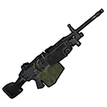
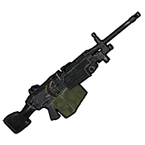
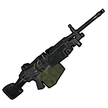

Homepage
Weaponry
Building
Monuments
Strategy
Contact
Weaponry
(Psst: hover over a weapon to see what it does!)



, it'll most likely be more cost effective to take a Double Barrel over a Pump Shotgun.")
.
The Eoka pistol consists of a spent 20mm cartridge with a small hole on top attached to a crude wooden frame. A shotgun shell is loaded into the 20mm shell, and a stone is scraped across the hole on top to produce a spark to fire the weapon.")
 is a close range weapon that also serves as a basic raiding tool. Fire sprayed from a flamethrower may obscure a target's vision and rapidly drain their health.
The Flame Thrower will start to steadily spawn fireballs once the trigger has been held long enough, and each one will damage and slow players or burn any wooden items they touch. Take care- fireballs spawned from spraying can and will burn bodies away (but their loot will fall in a bag if they do).
Raiding with a flamethrower is accomplished by continuously spraying a wooden structure with fire until it shatters. Structures without a base for the fireballs to land on are very inefficient to raid with a flamethrower, since fireballs will not damage the targeted area.
Many would not recommend using this as a weapon because of its low Damage Per Second, and short range. A good shotgun can outperform it in many situations.")
 



. It is best advised to only use the Revolver against opponents with similar armaments or as a sidearm to another weapon.")